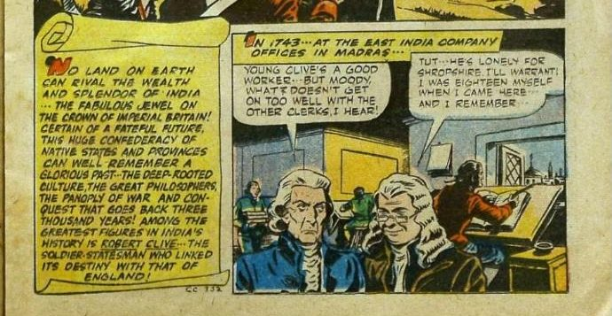

How it works: read the comic pages → answer the question about today's big idea → see what the comic got right and wrong → write 1–2 sentences. Done = all parts green, then turn in at the bottom.
Word help (tap to open)
- East India Company = a British trading company that had its own army
- Nawab (nuh-WAHB) = a ruler of a region in India
- Sepoys (SEE-poyz) = Indian soldiers who fought for the company
- Bengal (ben-GAWL) = a rich region in northeast India
- Reprisal = an attack to get back at someone
- 1946 comic = made for American kids in the 1940s. It uses some old words and shows one point of view.

Click the page to make it bigger.
Turn in your work
Your work saves on this device, so you can come back later. Your teacher sees it after you turn it in.
Comic: Real Life Comics no. 30 (1946), Nedor Publishing, a true-history comic of the 1940s. Public domain. Page images from Comic Book Plus (comicbookplus.com). Cropped to today's reading.